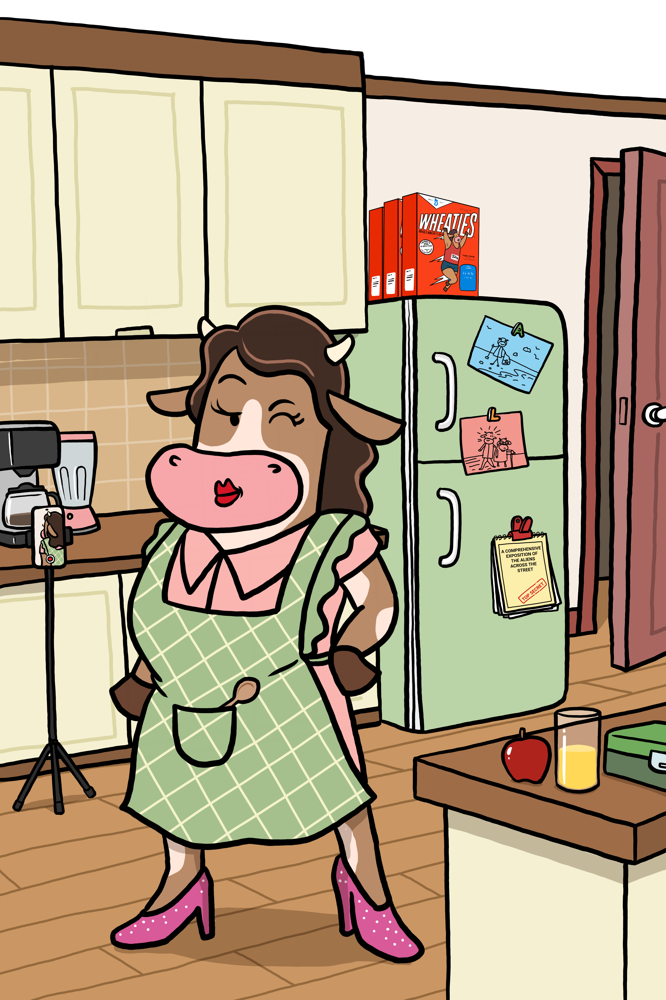

Most crypto charts look like a roller coaster designed by someone with a personal grudge.
Why volatile price swings cause panic and how stablecoins provide a calm dock.
💡 Herd Glossary: Stablecoin
A digital dollar (like USDC) designed to stay pegged to $1.00 so your balance remains steady while the market swings.
Making crypto less scary, one cartoon cow at a time.
Herd up free.